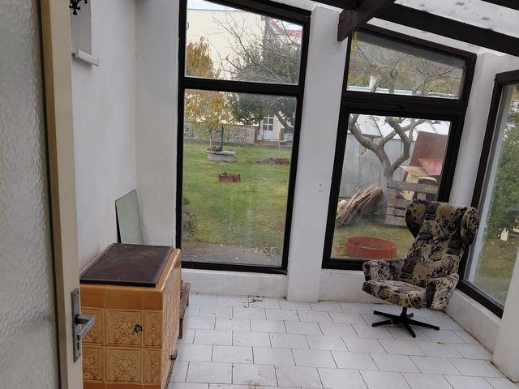
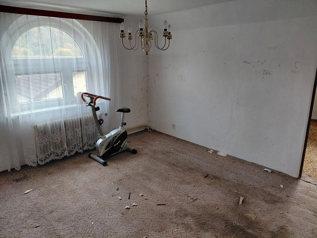
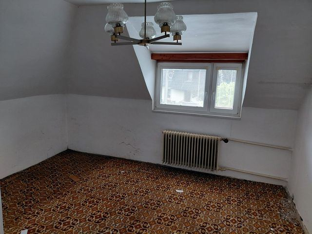
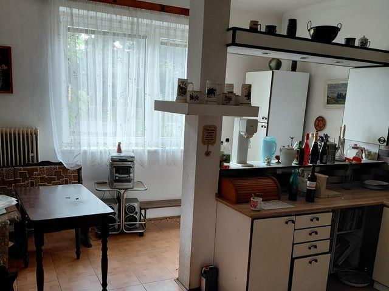
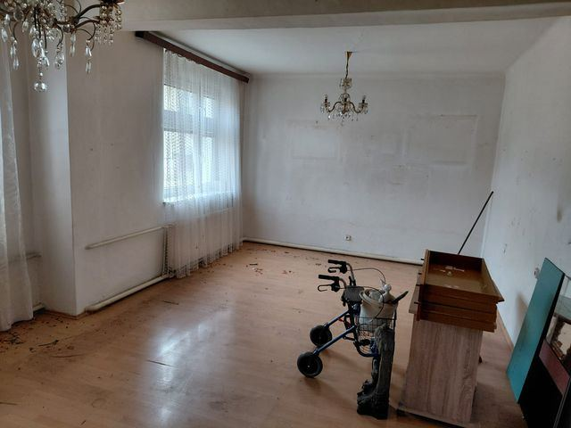
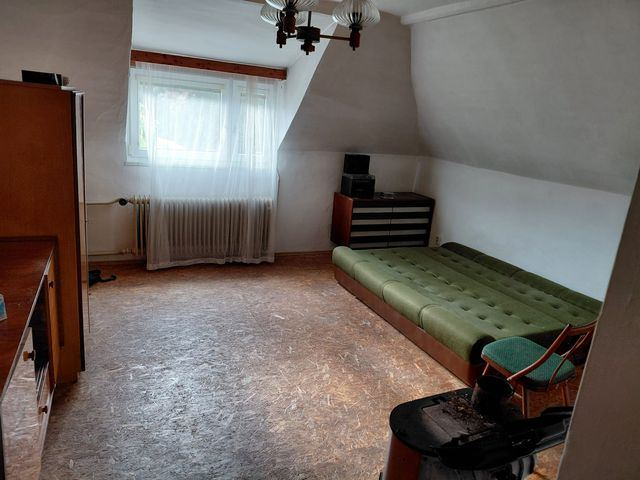

Čtvrtek 29. 10. od 13:00, konec nejpozději v 16:00 dronem. Majitel je tam od 12:00. Dům má být prázdný a uklizený i se zahradou, listí přes noc nevadí, z fotek ho uklidíme. Počasí: bez srážek, 11 °C, oblačno 60–70 %, od 15:00 kolem 50 %, vítr 2 m/s, nárazy do 5 m/s. Uliční fasáda míří na VJV (119°) a je celé odpoledne ve stínu; zahrada na ZSZ (299°) je na slunci zhruba 13:40–15:30, pak ji stíní stromy. Slunce 13:00 200°/25° · 14:00 215°/20° · 15:00 228°/14° · 16:00 241°/6°, západ 16:47. Před záběrem nahlas číslo řádku. VIZ: stativ 15 s bez pohybu (u dronu 5 s statický rám), nikdo v záběru. Když je zataženo: interiér jede vždycky, zahradu a hero počkat na slunce, dron na konec.
| Čas | Kde | Řádky |
|---|---|---|
| 13:00 | Příjezd a obchůzka s majitelem | 1–4 |
| 13:10 | Zimní zahrada a pokoje do zahrady DŘÍV, NEŽ DO NICH ZASVÍTÍ | 5–10 |
| 13:40 | Přízemí INTERIÉR | 11–17 |
| 14:10 | Podkroví INTERIÉR | 18–22 |
| 14:30 | Zahrada ve slunci SLUNCE ZE JZ, NÍZKO | 23–29 |
| 15:15 | Uliční strana STÍN, ROVNOMĚRNĚ | 30–33 |
| 15:35 | Dron nad Loděnicemi POSLEDNÍ, DO 16:00 | 34–37 |
| 16:00 | Konec |
Bez komentáře, příběh nesou záběry a titulky v barvách a s logem PORTA INVEST. Šest pokojů a dům zvenku se v jednom záběru promění do vizualizace. Pořadí ve filmu; natáčí se podle světla (Shotlist).
Tři nejsilnější záběry rychle za sebou: dron nad zahradou, pokoj s obloukovým oknem se zařídí, dům v opravené podobě.
Natočit: → řádky 14, 15, 23, 24
Obec v nízkém slunci, pomalé přiblížení k ulici První.
Natočit: → řádky 34
Dron nad pozemkem, zahradní strana ve slunci, studna a stromy. Dům se v jednom záběru změní v opravený.
Natočit: → řádky 23, 24, 25, 26, 27, 28, 30

Prosklená stěna a kachlová kamna, pohled ven na zahradu. Prolnutí do zařízené.
Natočit: → řádky 5, 6, 7, 8

Chodba s dřevěným obkladem, kuchyně, velký pokoj, pokoj s obloukovým oknem. Kuchyně a oba pokoje se prolnou do zařízených.
Natočit: → řádky 11, 12, 13, 14, 15

Schodiště nahoru a dva pokoje pod šikmými stropy, oba se prolnou do zařízených.
Natočit: → řádky 18, 19, 20, 21
Dům z ulice v rovnoměrném stínu, příjezd ulicí První.
Natočit: → řádky 30, 31, 32
Dron stoupá nad Loděnice, logo stojí nad střechami, koncová karta s kontaktem makléře.
Natočit: → řádky 35
Každá jako video do filmu i jako statický obrázek do inzerátu. Styl světlý venkovský: dřevo, bílá, len. Fotky jsou z 21. 10., dnes má být dům prázdný. Ze stativu 15 s bez pohybu, nikdo v záběru.
posezení s křesly a rostlinami, kamna zůstanou
Natočit: → řádky 5

nová linka a jídelní stůl
Natočit: → řádky 12

obývák s pohovkou a knihovnou
Natočit: → řádky 13
ložnice, okno je hlavní motiv
Natočit: → řádky 14
dětský pokoj
Natočit: → řádky 19

pracovna nebo pokoj pro hosty
Natočit: → řádky 20
po opravě: omítka, okna, upravená zahrada; tvar, střecha a okna beze změny. Točíme 2 verze (zahrada + ulice), vybereme lepší
Natočit: → řádky 23, 30